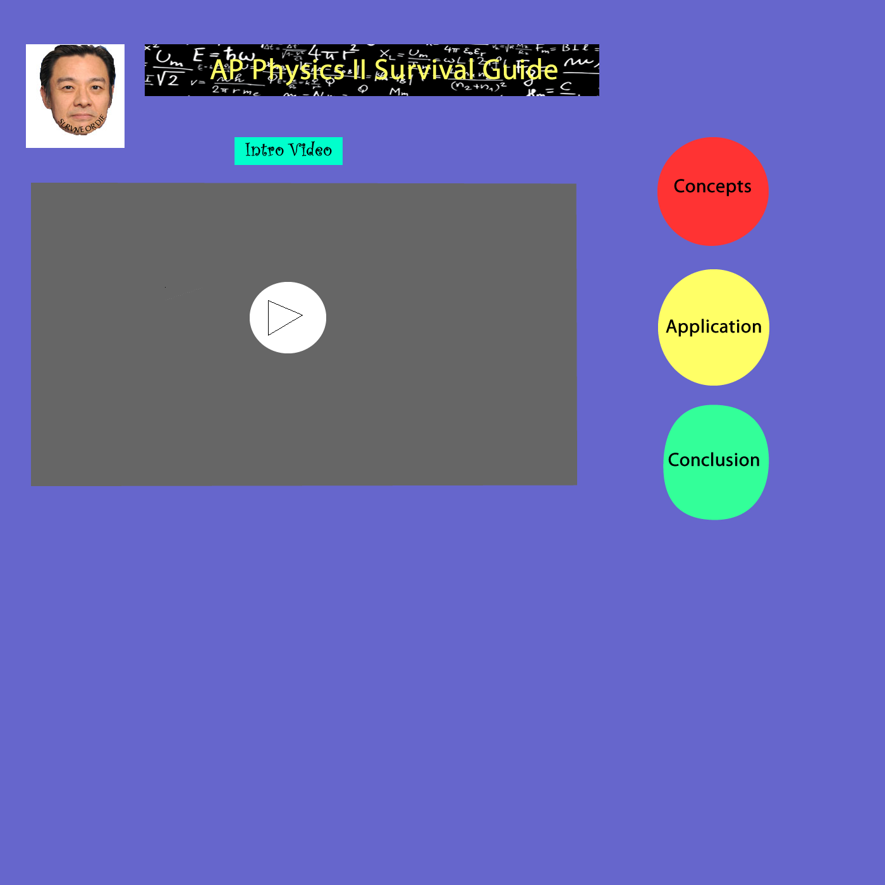

Working on My Homepage Site
Summary of Homepage Site: This webpage is intended to document my process of brainstorming and creating a homepage.
It displays my wireframes and storyboard in order of progression during the process.
Made my Wireframe version for Homepage
-

- Voted Miffy's layout as the best
- Created it in fireworks
- Chose to include logo, video, description, and subpage links
Made my Storyboard version for Homepage
- Everyone creates their own storyboard and then we compare
- Storyboard Rough Draft 1

- Storyboard
- The Storyboard chosen for our website is

- Storyboard in Fireworks
- Storyboard in Dreamweaver
Working in Fireworks vs Working in Dreamweaver
- Working in Fireworks is easy and can be done without any confusion because it has very simple fucntions
- Working in Dreamweaver is slightly more complicated as the it has very few tools that are similar with fireworks
- I did not struggle with Fireworks too much as Mr. Chu explained it fairly clearly and because it was quite similar to photoshop. We had been using fireworks for many things throughout the year and so it was easier for me
- I am struggling a lot with my dreamweaver because the interface is completely different and I do not feel that the transition from fireworks to this was too smooth. I have already encountered numerous problems, such as fixing the size of the div, and etc., but I will pull through by doing research.
Fireworks vs Dreamweaver (Features and purpose)
- Fireworks is a graphics application intended for producing Web graphics.
Whereas, Dreamweaver is a Web development tool that can combine both HTML and code to build websites using those programming codes.
- It is better to use Fireworks as a graphics and site-elements designing tool for the skeleton of the website.
Whereas, Dreamweaver contributes to forming the overall build of the website.
- Both are used for different stages of a workflow process. In my project, I used Fireworks to first form the wireframe and storyboard graphics aspects.
I then "sliced" the parts of the graphics and exported them to use in the Dreamweaver application.
- Although both are standalone applications, they both are empirical to the successful development of my homepage. Fireworks is intended for the focus of design elements,
whereas Dreamweaver is used for the coding and structure of the overall website.
Obstacles
- Did not know how to change the CSS style sheet of each div
Miffy taught me how to do it by telling me to select the box and clicking "New CSS rule" located in properties
- Had a problem with adjusting the size of the logo to match with the size in Fireworks
Miffy helped me again by telling me to adjust the size of the imported image rather than altering the div box
Made my version of the sub-Wireframe
Note: Red = Constant. Blue = Variable

- The most notable feature will be the navigation bar as it will be customized to wrap open to the left (hopefully)
- It will also contain small arrows at the bottom to direct to the next page
- All the content will be displayed in the big box.
- We choose to all create different wireframes and then vote for the best. Mine was not selected, so we used Miffy's wireframe and storyboard
- The subpage wireframe chosen is the following:
-